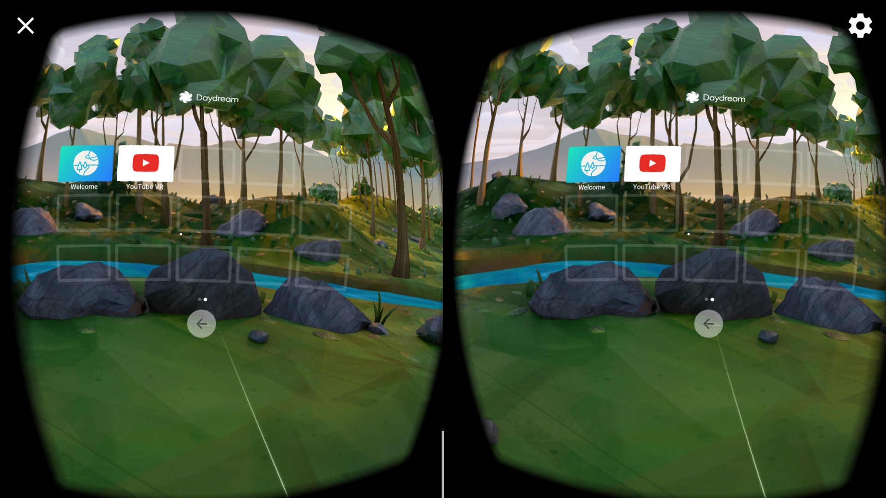
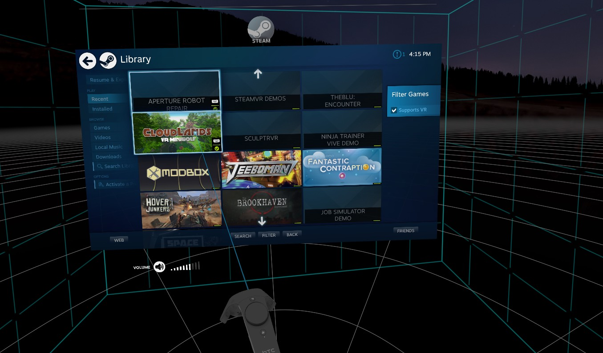

Keeping it real
with web
Hi, I'm Ben
@BenjaminBenBen
Freelance JavaScript developer
based in Oxford, UK
Oxford, UK (not CA)
Some stuff that I've enjoyed doing
Today
VR, The Web & WebVR
Consuming and Creating WebVR
Compimentary APIs & Approaches
Virtual content
Queen Victoria & Nicola Pellow
VR, The Web & WebVR
VR

[picture] vs [stereoscope]
162 years later

Cardboard
GearVR, Daydream
Occulus Rift, Vive, Hololens
Vive Standalone, WindowsMR
The Web
The Web:
1/ URL
2/ HTTP
3/ HTML
The Browser:
Presentation
Killer feature of every browser:
The next version
The Web & Web Browser
VR?
Should browsers support VR?
Yes. Absolutely.
WebVR
The Extensible Web Manifesto
WebVR 1.0, 1.1, 2.0
What does WebVR let you do?
1/ Query available headsets
2/ Access a headset pose
3/ Show content on headset
& handle related challenges
Code
// get a list of attached/supported displays
navigator.getVRDisplays()
// access pose/position of headset
display.getFrameData(frameData)
// present canvas on device
display.requestPresent([{source: GLCanvas}])

Consuming WebVR
Device type
Daydream (Android)
Device type
Vive (PC)
Device type
GearVR (Android)
Different ui, same code
Creating WebVR
Several ways to do this
Low level → High level
#1
(live) code from scratch
You probably shouldn't do this one
about:blank
Make a canvas element
const canvas = document.createElement('canvas')
canvas.height = 1080
canvas.width = 960*2
document.body.appendChild(canvas)
// just to make sure it's there
canvas.style.border = '10px solid green'
const canvas = document.createElement('canvas')
canvas.height = 1080
canvas.width = 960*2
document.body.appendChild(canvas)
// just to make sure it's there
canvas.style.border = '10px solid green'
Initialise WebGL
const gl = canvas.getContext('webgl')
const gl = canvas.getContext('webgl')
Find a VR display
let display
navigator.getVRDisplays()
.then(displays => display = displays[0])
let display
navigator.getVRDisplays()
.then(displays => display = displays[0])
Display our canvas
display.requestPresent([{source: canvas}])
display.requestPresent([{source: canvas}])
[daydream loading]
[controller pairing]
See if it's working
gl.clearColor(1,0.5,0,1)
gl.clear(gl.COLOR_BUFFER_BIT)
gl.clearColor(1,0.5,0,1)
gl.clear(gl.COLOR_BUFFER_BIT)
VRFrameData
const fd = new VRFrameData()
const fd = new VRFrameData()
Populate it
display.requestAnimationFrame(() => {
display.getFrameData(fd)
})
display.requestAnimationFrame(() => {
display.getFrameData(fd)
})
This is not a WebGL talk
const renderFrameData=function(l){var k=function(a){for(var b=function(a,b,e,h){h=void 0===h?1:h;var g=Math.sqrt(1.25)/2*h,c=.5*h;h=[a+0,b+0,e+g];var f=[a-g,b-c,e-g],d=[a+0,b+c,e-g];a=[a+g,b-c,e-g];b=[1,.5,0];e=[0,1,.5];g=[.5,0,1];c=[1,0,.5];return[h,b,f,b,d,b,h,e,a,e,f,e,h,g,d,g,a,g,f,c,a,c,d,c].reduce(function(a,b){return a.concat(b)},[])},f=[],d=-7;7>d;d++)for(var m=-7;7>m;m++)f=f.concat(b(d,-.75,m,.2));b=a.createBuffer();a.bindBuffer(a.ARRAY_BUFFER,b);a.bufferData(a.ARRAY_BUFFER,new Float32Array(f),
a.STATIC_DRAW);b=a.createShader(a.FRAGMENT_SHADER);a.shaderSource(b,"precision mediump float; varying vec3 v_color; void main() { gl_FragColor = vec4(v_color, 1.0); }");a.compileShader(b);d=a.createShader(a.VERTEX_SHADER);a.shaderSource(d,"attribute vec3 a_position; attribute vec3 a_color; varying vec3 v_color; uniform mat4 u_view; uniform mat4 u_proj; void main() { v_color = a_color; gl_Position = u_proj * u_view * vec4(a_position, 1.0); }");a.compileShader(d);var c=a.createProgram();a.attachShader(c,
d);a.attachShader(c,b);a.linkProgram(c);var k=a.getAttribLocation(c,"a_position"),n=a.getAttribLocation(c,"a_color"),l=a.getUniformLocation(c,"u_view"),q=a.getUniformLocation(c,"u_proj"),p=new Float32Array([1,0,0,0,0,1,0,0,0,0,1,0,0,0,0,1]);a.enable(a.DEPTH_TEST);return function(b,d,e){a.useProgram(c);a.uniformMatrix4fv(l,!1,b||p);a.uniformMatrix4fv(q,!1,d||p);e?a.viewport.apply(a,e):a.viewport(0,0,a.canvas.width,a.canvas.height);a.vertexAttribPointer(k,3,a.FLOAT,!1,24,0);a.enableVertexAttribArray(k);
a.vertexAttribPointer(n,3,a.FLOAT,!1,24,12);a.enableVertexAttribArray(n);a.drawArrays(a.TRIANGLES,0,f.length/6)}}(l);return function(a){var b=canvas.width,f=canvas.height;k(a.leftViewMatrix,a.leftProjectionMatrix,[0,0,b/2,f]);k(a.rightViewMatrix,a.rightProjectionMatrix,[b/2,0,b/2,f])}}(gl);
const renderFrameData=function(l){var k=function(a){for(var b=function(a,b,e,h){h=void 0===h?1:h;var g=Math.sqrt(1.25)/2*h,c=.5*h;h=[a+0,b+0,e+g];var f=[a-g,b-c,e-g],d=[a+0,b+c,e-g];a=[a+g,b-c,e-g];b=[1,.5,0];e=[0,1,.5];g=[.5,0,1];c=[1,0,.5];return[h,b,f,b,d,b,h,e,a,e,f,e,h,g,d,g,a,g,f,c,a,c,d,c].reduce(function(a,b){return a.concat(b)},[])},f=[],d=-7;7>d;d++)for(var m=-7;7>m;m++)f=f.concat(b(d,-.75,m,.2));b=a.createBuffer();a.bindBuffer(a.ARRAY_BUFFER,b);a.bufferData(a.ARRAY_BUFFER,new Float32Array(f),
a.STATIC_DRAW);b=a.createShader(a.FRAGMENT_SHADER);a.shaderSource(b,"precision mediump float; varying vec3 v_color; void main() { gl_FragColor = vec4(v_color, 1.0); }");a.compileShader(b);d=a.createShader(a.VERTEX_SHADER);a.shaderSource(d,"attribute vec3 a_position; attribute vec3 a_color; varying vec3 v_color; uniform mat4 u_view; uniform mat4 u_proj; void main() { v_color = a_color; gl_Position = u_proj * u_view * vec4(a_position, 1.0); }");a.compileShader(d);var c=a.createProgram();a.attachShader(c,
d);a.attachShader(c,b);a.linkProgram(c);var k=a.getAttribLocation(c,"a_position"),n=a.getAttribLocation(c,"a_color"),l=a.getUniformLocation(c,"u_view"),q=a.getUniformLocation(c,"u_proj"),p=new Float32Array([1,0,0,0,0,1,0,0,0,0,1,0,0,0,0,1]);a.enable(a.DEPTH_TEST);return function(b,d,e){a.useProgram(c);a.uniformMatrix4fv(l,!1,b||p);a.uniformMatrix4fv(q,!1,d||p);e?a.viewport.apply(a,e):a.viewport(0,0,a.canvas.width,a.canvas.height);a.vertexAttribPointer(k,3,a.FLOAT,!1,24,0);a.enableVertexAttribArray(k);
a.vertexAttribPointer(n,3,a.FLOAT,!1,24,12);a.enableVertexAttribArray(n);a.drawArrays(a.TRIANGLES,0,f.length/6)}}(l);return function(a){var b=canvas.width,f=canvas.height;k(a.leftViewMatrix,a.leftProjectionMatrix,[0,0,b/2,f]);k(a.rightViewMatrix,a.rightProjectionMatrix,[b/2,0,b/2,f])}}(gl);
(full source: github/benfoxall/microgl)
Use our helper to render to canvas
renderFrameData(fd)
renderFrameData(fd)
Create an animation loop
function animate() {
if(display.isPresenting) display.requestAnimationFrame(animate)
gl.clear(gl.DEPTH_BUFFER_BIT | gl.COLOR_BUFFER_BIT)
display.getFrameData(fd)
renderFrameData(fd)
display.submitFrame()
}
function animate() {
if(display.isPresenting) display.requestAnimationFrame(animate)
gl.clear(gl.DEPTH_BUFFER_BIT | gl.COLOR_BUFFER_BIT)
display.getFrameData(fd)
renderFrameData(fd)
display.submitFrame()
}
Run it
display.requestAnimationFrame(animate)
display.requestAnimationFrame(animate)
#2
three.js
extensive 3d library
[three]
#3
a-frame
html-like
[a-frame]
#4
Vizor / PlayCanvas
graphical IDE
[vizor]
Complimentary APIs & Approaches
WebVR isn't a magical box
WebVR
+ WebGL
[WebGL]
const fData = new VRFrameData()
display.getFrameData(fData)
// fData = {leftViewMatrix: […], pose: {…}, etc}
const fData = new VRFrameData()
display.getFrameData(fData)
// fData = {leftViewMatrix: […], pose: {…}, etc}
gl.uniformMatrix4fv(u_projection, false,
fData.leftProjectionMatrix)
gl.uniformMatrix4fv(u_view, false,
fData.leftViewMatrix)
gl.uniformMatrix4fv(u_projection, false,
fData.leftProjectionMatrix)
gl.uniformMatrix4fv(u_view, false,
fData.leftViewMatrix)
device.requestAnimationFrame()
device.requestAnimationFrame()
WebVR
+ Gamepad API
navigator.getGamepads()
navigator.getGamepads()
WebVR
+ Web Audio
Things make noise
Noises come from places
Spatial Audio
WebVR
+ Progressive Web Apps

